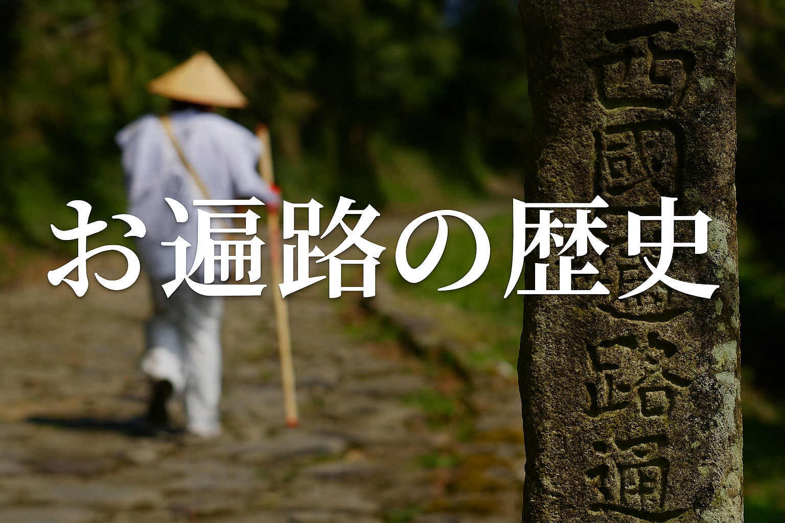

お遍路の歴史
お遍路は弘法大師（空海）をたたえる巡礼で、長い歴史と信仰に根ざした文化です。寺院ごとの特色や古文書に残る逸話が魅力です。
お遍路は弘法大師（空海）をたたえる巡礼で、長い歴史と信仰に根ざした文化です。寺院ごとの特色や古文書に残る逸話が魅力です。
準備、参拝の作法、納経の仕方、宿泊や移動のコツなど、はじめての人にもわかりやすい手順をまとめています。
寺院周辺の絶景スポットや季節ごとの見どころ、地元で人気の食べ物などを写真付きで紹介します。
お接待や納経帳の意味、白衣や杖にまつわる話など、知っておくと旅が深まるトリビアを集めました。
実際に巡礼した方の声を掲載。失敗談や感動の瞬間、役立つアドバイスが満載です。
白衣、納経帳、防水バッグ、疲れにくい靴など、快適に巡礼するためのおすすめアイテムを紹介します。